高尾山
| 日付 | 2007年12月16日（日） |
|---|---|
| 山域 | 高尾周辺 |
| メンバー | グループ（男20女10） |
| 山行形態 | 日帰り |
| アクセス | 電車、バス |
| ルート (Map) | 小仏→景信山→城山→高尾山→高尾山口駅 |
皆で高尾山忘年山行に行く。
10:38 小仏バス停到着。標高290m。
皆準備を整える。
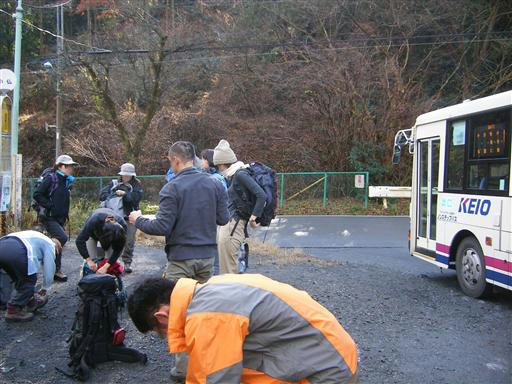
景信山まで1時間。ゆっくり歩き始める。
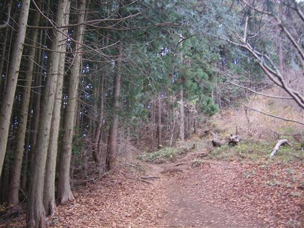
山頂が見えてきた。
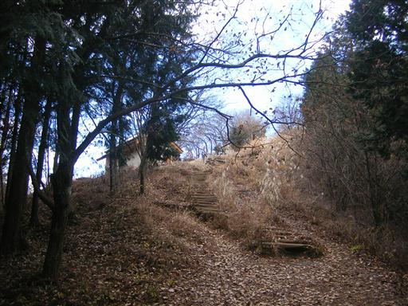
11:52 景信山山頂到着。標高727m。
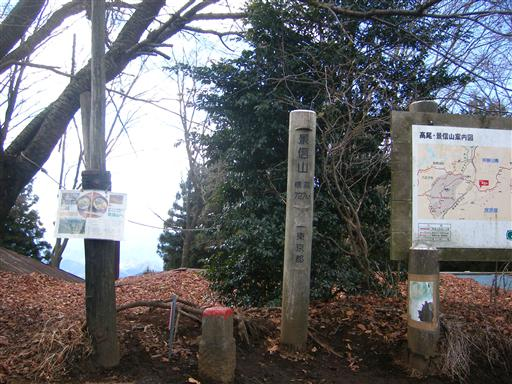
山頂からの景色。今日は晴れているので周りの低い山々がきれいに見渡せる。
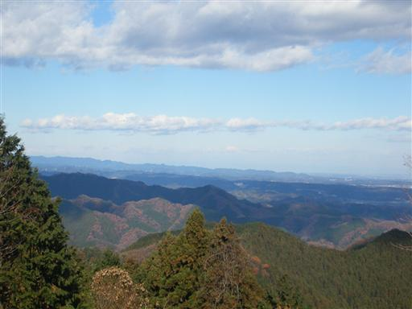
遠くにある富士山もはっきり見える。
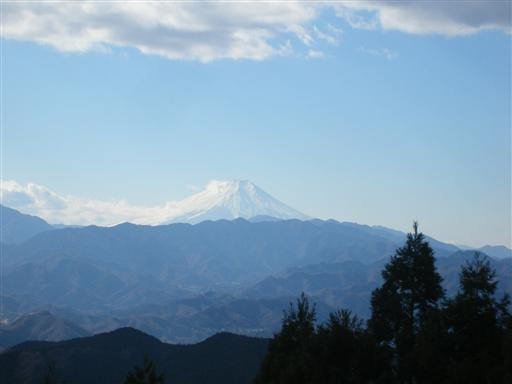
山頂には茶店があり、多くの人で賑わっている。
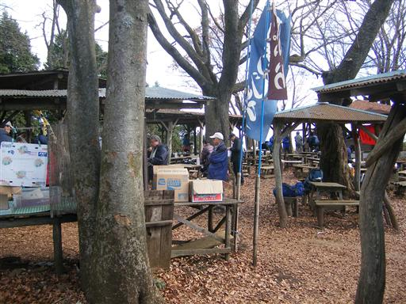
景信山から城山をめざす。
間にある小仏峠から城山まで登り返す。
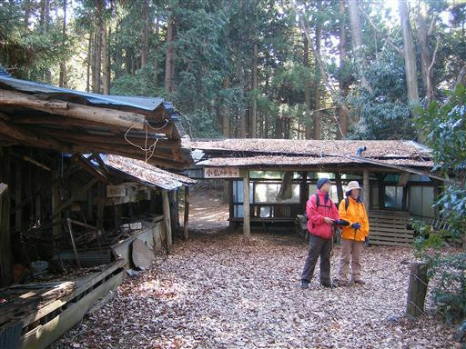
14:24 城山山頂到着。標高670m。
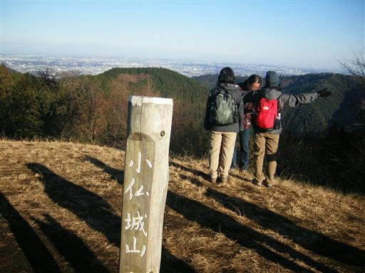
この山からも富士山が望める。
午後になり、若干雲がかかり始めている。
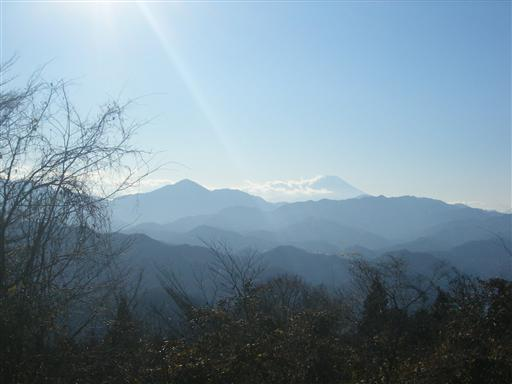
小広い山頂で忘年会。
おでん、お汁粉、酒などを飲んでのんびりする。
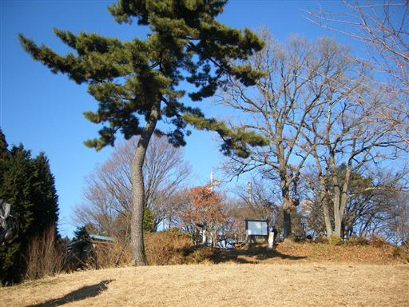
城山から高尾山を経由して下山する。
高尾山も多くの人で賑わっている。

高尾山にある薬王院。
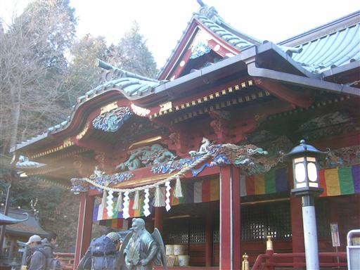
壁には派手な装飾が施されている。
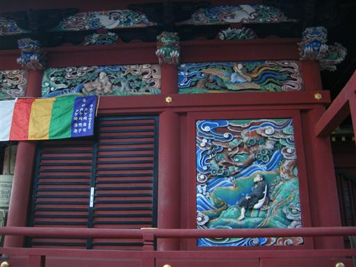
薬王院にある天狗像。
天狗像にのぼらないでくださいという注意書きが…
登ろうとする人なんているのだろうか？
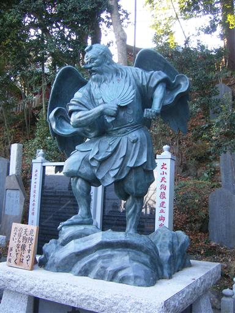
薬王院を後にし、下山。
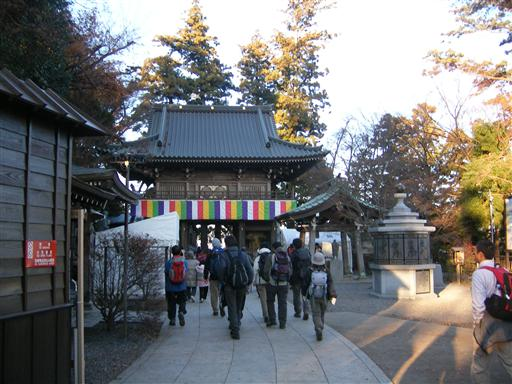
他の山行記録